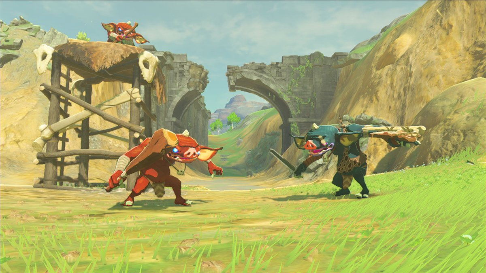
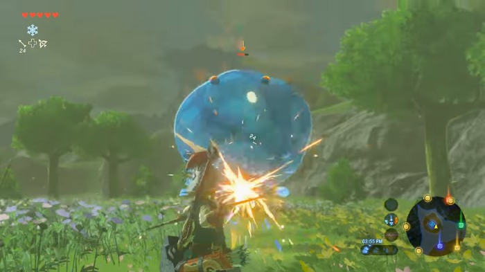
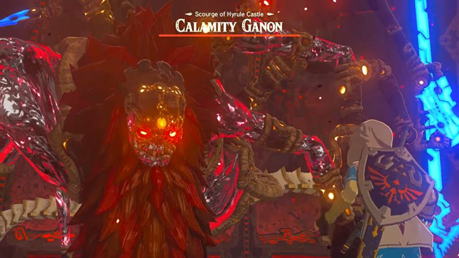

Here are some Monsters in Breath of the wild
Make a site like this
Follow my Projects
Back

Boboklin
Blue colered Boboklins are the most powerful.
Keep in mind that a group of these are harder to defeat then a single one.
In a group try to attack the Boboklin on the tower or he may alert other Boboklins.

Skeletons and Chuchus
Skeletons are usualy only found in night.
Chuchus are easy to defeat and bigger ones give you more chuchu gelly.
You can use a deafeted skeletons arm as a weapon.

Calamity Ganon and Blood Moon
You Will NEED ALL FOUR DIVINE BEASTS to have a chance of defeating this.
If the beast reaches it's FULL POWER it will use many tools against you.
During a blood moon all beasts gain their POWERS and LIFE back.